Visual Dashboard Guide¶
A comprehensive visual tour of all 20 dashboard pages with screenshots and detailed usage instructions.
Quick Navigation¶
- Getting Started
- Main Navigation
- Explore & Analyze (7 pages)
- Infrastructure (4 pages)
- Migration (4 pages)
- Management (2 pages)
- Export & Help (2 pages)
Getting Started¶
Launching the Dashboard¶
# Start the dashboard
streamlit run src/dashboard/app.py
# Or with the CLI
vmware-dashboard
# Custom port
streamlit run src/dashboard/app.py --server.port 8502
The dashboard opens at http://localhost:8501 by default.
Navigation Methods¶
1. Sidebar Menu - Click page buttons in the left sidebar - Pages are organized by category (collapsible sections)
2. Direct URL Access
- Use query parameters: http://localhost:8501/?page=Page_Name
- Example: http://localhost:8501/?page=Data_Explorer
- Bookmark your favorite pages
3. Keyboard Shortcuts - Use sidebar navigation with keyboard - Tab through interface elements
Main Navigation¶
📊 Overview¶
Purpose: High-level dashboard with key metrics and visualizations
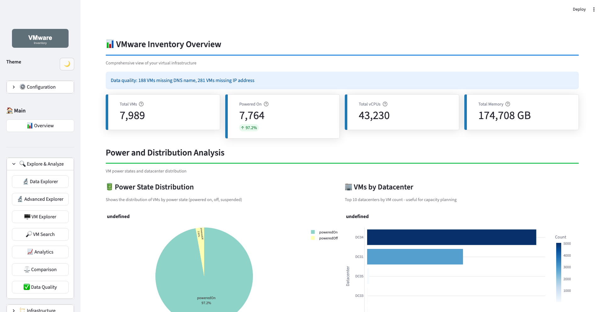
Key Features: - Metrics Cards: Total VMs, powered on/off, vCPUs, memory - Power State Chart: Visual distribution of VM states - Datacenter Overview: VMs per datacenter - Cluster Analysis: Top clusters by VM count - OS Distribution: Most common operating systems
Best For: - Executive summaries - Quick infrastructure health checks - Identifying resource hotspots - Daily status monitoring
Quick Actions: - Click metrics to drill down - Hover over charts for details - Export charts as images - Filter by datacenter/cluster
URL: http://localhost:8501/?page=Overview
Explore & Analyze¶
🔬 Data Explorer¶
Purpose: PyGWalker-based interactive data exploration with drag-and-drop analytics
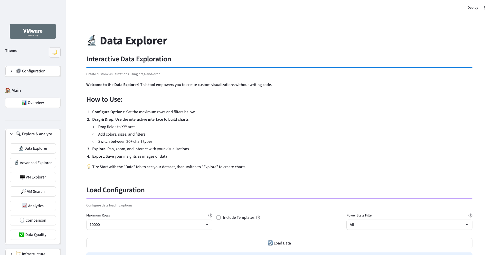
Key Features: - Drag & Drop Interface: Build visualizations without code - Auto-Generated Charts: Intelligent chart recommendations - Data Transformation: Filter, sort, aggregate on the fly - Export Options: Save charts and datasets - Multiple Viz Types: Scatter, bar, line, pie, and more
Best For: - Ad-hoc data exploration - Custom visualization creation - Discovering data patterns - Interactive analysis sessions
How to Use: 1. Drag fields from left panel to visualization areas 2. Choose chart type from toolbar 3. Apply filters using the filter panel 4. Aggregate data using built-in functions 5. Export results or save visualization
Tips: - Try different field combinations - Use color coding for categories - Apply multiple filters for detailed analysis - Save frequently used views
URL: http://localhost:8501/?page=Data_Explorer
🔬 Advanced Explorer¶
Purpose: SQL query interface with PyGWalker visualization
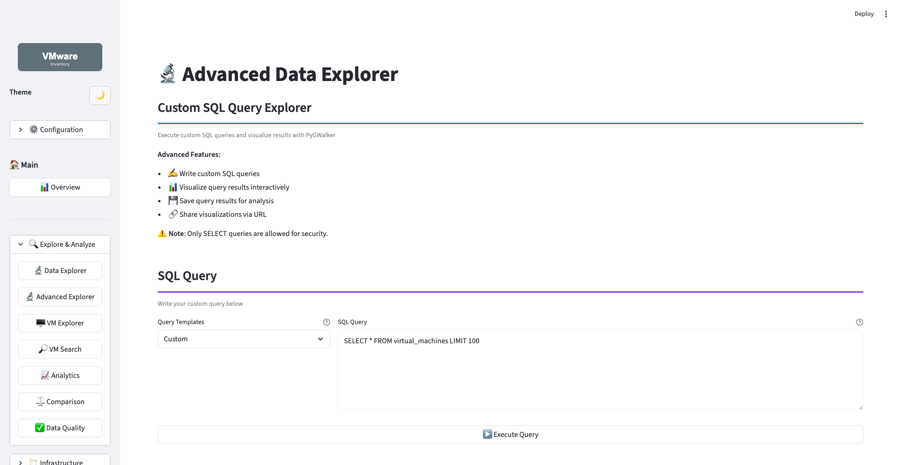
Key Features: - SQL Query Editor: Write custom SQL queries - Query Templates: Pre-built common queries - Result Visualization: Automatic chart generation from results - Export Results: Download as CSV or Excel - Query History: Access previously run queries
Best For: - Power users who know SQL - Complex data extraction - Custom reporting needs - Data validation queries
Example Queries:
-- Find VMs with high CPU allocation
SELECT vm, cpus, memory, cluster
FROM vms
WHERE cpus > 8
ORDER BY cpus DESC;
-- Storage analysis by datacenter
SELECT datacenter,
COUNT(*) as vm_count,
SUM(provisioned_mb) as total_storage
FROM vms
GROUP BY datacenter;
-- OS distribution
SELECT os_config, COUNT(*) as count
FROM vms
GROUP BY os_config
ORDER BY count DESC;
URL: http://localhost:8501/?page=Advanced_Explorer
🖥️ VM Explorer¶
Purpose: Detailed VM inspection and analysis with rich tabbed interface
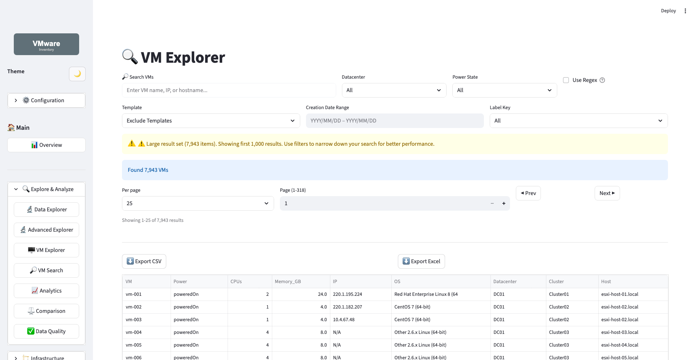
Key Features: - Tabbed Interface: Organized by category - General: Name, UUID, power state, tools version - Resources: CPU, memory, storage allocation - Network: IPs, DNS, MAC addresses, network adapters - Infrastructure: Datacenter, cluster, host placement - Search Functionality: Find VMs by name, IP, or attribute - Detailed Metrics: Complete VM configuration - Quick Filters: By datacenter, cluster, power state
Best For: - Troubleshooting specific VMs - Configuration audits - Network mapping - Capacity validation
Navigation Tips: 1. Use search bar for quick VM lookup 2. Click tabs to see different aspects 3. Hover over fields for descriptions 4. Use filters to narrow results 5. Paginate through large lists
Common Tasks: - Find by IP: Use IP search - Check Resources: Review Resources tab - Verify Network: Check Network tab - Location Info: See Infrastructure tab
URL: http://localhost:8501/?page=VM_Explorer
🔎 VM Search¶
Purpose: Advanced VM search and filtering capabilities
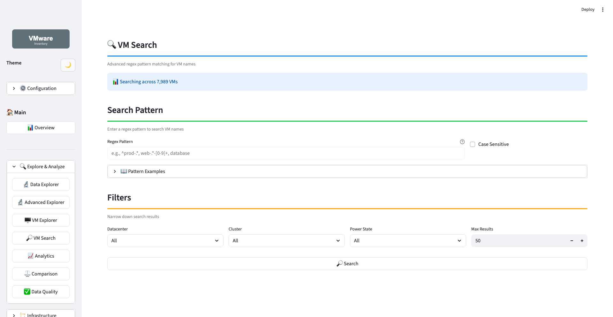
Key Features: - Multi-Criteria Search: Name, IP, DNS, cluster, folder - Advanced Filters: - Resource ranges (CPU, memory, storage) - Power state - Operating system - Network configuration - Result Preview: Quick overview before export - Bulk Operations: Act on search results - Export Results: CSV download
Best For: - Finding groups of VMs matching criteria - Pre-migration VM selection - Compliance auditing - Inventory verification
Search Examples:
By Resource Size:
By Location:
By OS:
Tips: - Combine multiple filters for precision - Use wildcards in name search (%) - Save common searches as bookmarks - Export results for offline analysis
URL: http://localhost:8501/?page=VM_Search
📈 Analytics¶
Purpose: Resource allocation patterns and OS analysis
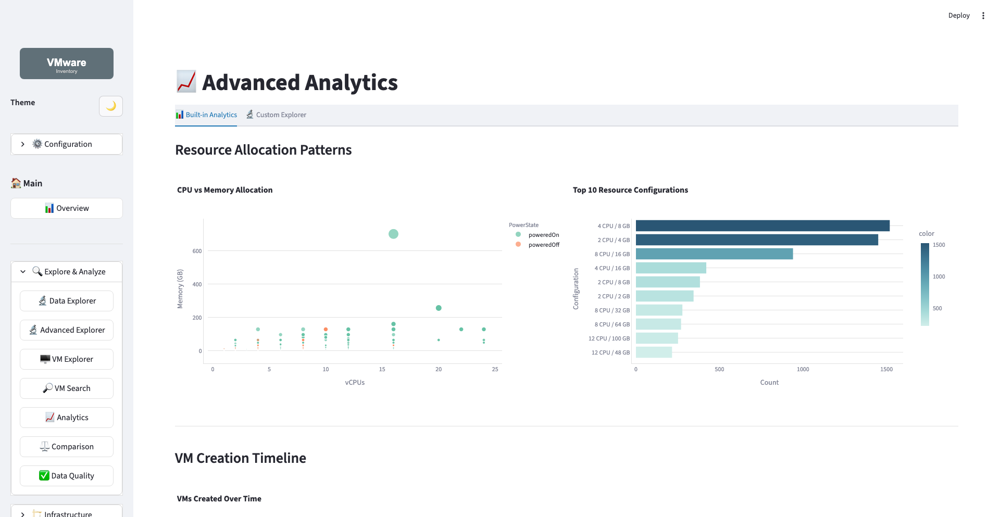
Key Features: - Resource Patterns: - CPU vs Memory correlation - Top 10 configurations - Resource distribution charts - OS Analysis: - Treemap visualization - Sunburst charts - CPU allocation by OS - Cluster Efficiency: - VMs per host ratios - Resource balance metrics - Utilization bubble charts - Environment Distribution: VM categorization
Best For: - Standardization initiatives - Rightsizing analysis - OS upgrade planning - Capacity planning
Insights to Look For: 1. Over-provisioned VMs: High CPU/memory but low usage 2. Standardization Gaps: Too many unique configurations 3. OS Diversity: Outdated OS versions 4. Cluster Imbalance: Uneven VM distribution
URL: http://localhost:8501/?page=Analytics
⚖️ Comparison¶
Purpose: Side-by-side datacenter/cluster comparisons
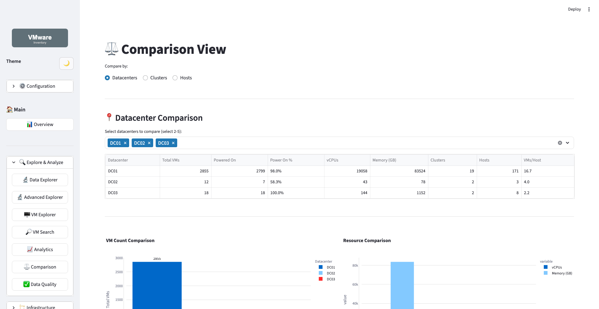
Key Features: - Datacenter Comparison: - VM count comparison - Resource allocation - Radar charts - Power state distribution - Cluster Comparison: - Side-by-side metrics - Resource profiles - Efficiency ratios - Host Comparison: - VM density - Resource utilization - Capacity metrics
Best For: - Site comparison and planning - Load balancing decisions - Migration target selection - Capacity alignment
How to Compare: 1. Select first datacenter/cluster 2. Select second datacenter/cluster 3. Review comparison charts 4. Export comparison report 5. Make data-driven decisions
Comparison Metrics: - Total VMs and distribution - CPU and memory allocation - Storage provisioned vs. used - Power state ratios - Average VM size - Resource efficiency
URL: http://localhost:8501/?page=Comparison
✅ Data Quality¶
Purpose: Field completeness and data quality analysis
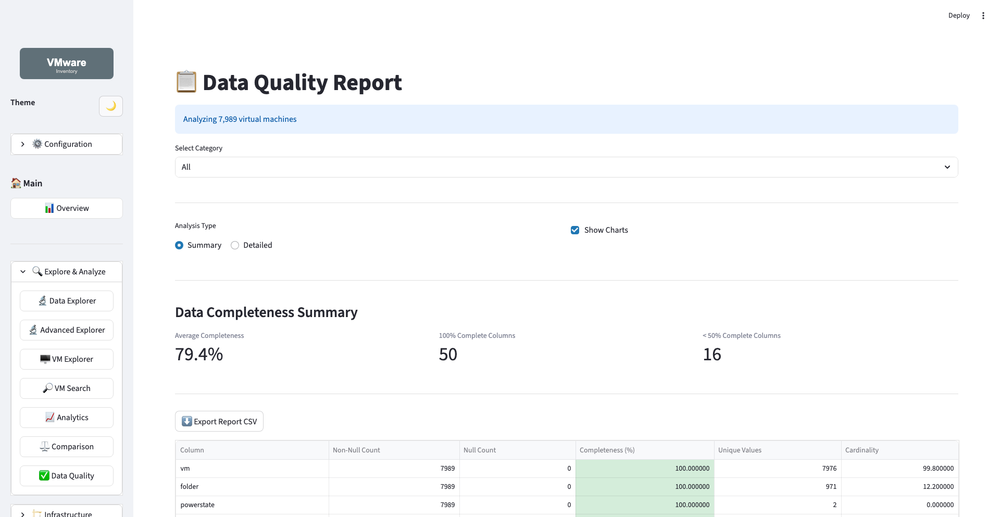
Key Features: - Completeness Scores: Percentage per field - Missing Data Heatmap: Visual gap identification - Recommendations: Actionable improvement suggestions - Field Analysis: - Required vs optional fields - Critical missing data - Data consistency checks - Quality Trends: Track improvement over time
Best For: - Data audit preparation - Improving inventory accuracy - Identifying collection gaps - Compliance verification
Common Issues: - Missing DNS names - Incomplete IP addresses - No folder assignments - Missing annotations - Unknown OS configurations
Action Items: 1. Review red/yellow fields (low completeness) 2. Follow recommendations 3. Update collection scripts 4. Re-import improved data 5. Verify completeness improved
URL: http://localhost:8501/?page=Data_Quality
Infrastructure¶
💻 Resources¶
Purpose: Resource metrics and allocation dashboard
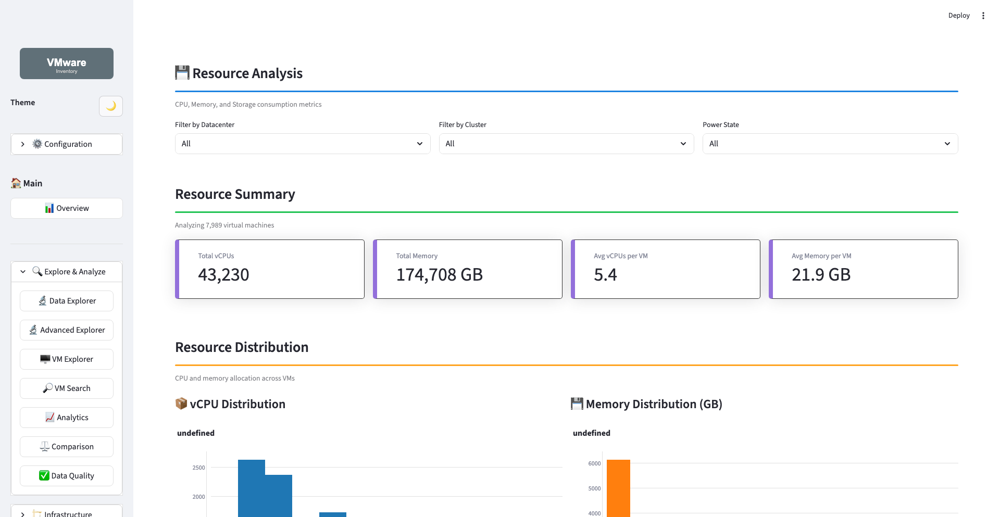
Key Features: - CPU Distribution: vCPU patterns across VMs - Memory Analysis: - Allocation by size ranges - Top consumers - Distribution charts - Storage Metrics: - Provisioned vs. in-use - Thin provisioning savings - Efficiency calculations - Top Consumers: Largest VMs by resource type - Interactive Filters: Datacenter, cluster, power state
Best For: - Resource optimization - Cost reduction initiatives - Capacity planning - Rightsizing projects
Key Metrics: - Total vCPUs allocated - Total memory (GB) - Storage provisioned (TB) - Storage in-use (TB) - Thin provisioning savings - Average VM size
Optimization Opportunities: - Over-provisioned VMs (high allocation, low usage) - Undersized VMs (resource constraints) - Storage waste (high provisioned, low used) - Standardization targets
URL: http://localhost:8501/?page=Resources
🌐 Infrastructure¶
Purpose: Infrastructure topology and details
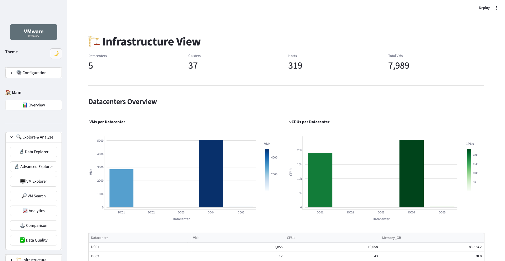
Key Features: - Hierarchy View: - Datacenter → Cluster → Host → VM - Visual topology representation - Capacity Metrics: - Per-datacenter totals - Cluster capacity usage - Host density metrics - Distribution Charts: - VMs per cluster - Hosts per datacenter - Resource allocation tree - Drill-Down Navigation: Click to explore deeper
Best For: - Understanding infrastructure layout - Capacity planning - Datacenter consolidation - Migration planning
Views Available: 1. Datacenter View: High-level site overview 2. Cluster View: Cluster-level details 3. Host View: Individual host metrics 4. VM View: VM placement visualization
URL: http://localhost:8501/?page=Infrastructure
📁 Folder Analysis¶
Purpose: Folder-level resource and storage analytics
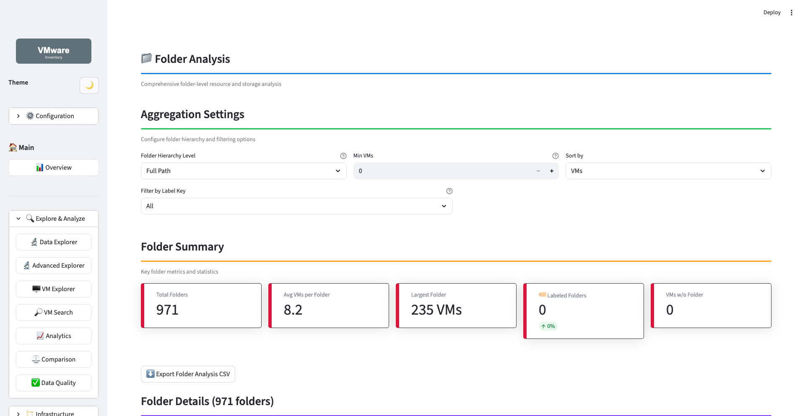
Key Features: - Folder Distribution: VM counts per folder - Resource Analysis: - CPU allocation by folder - Memory allocation by folder - Average resource profiles - Storage Analysis: - Provisioned storage by folder - Used storage by folder - Storage efficiency metrics - Aggregation Options: - Hierarchy level selection - Minimum VM threshold - Custom sorting
Best For: - Application-based analysis - Department chargeback - Folder organization review - Resource allocation by team
Analysis Options: - Group by folder depth - Filter by minimum VM count - Sort by resource type - Export folder reports
Common Uses: - Cost Allocation: Resource usage by department - Capacity Planning: Growth trends by folder - Organization Audit: Folder structure review - Migration Grouping: Bundle VMs by folder
URL: http://localhost:8501/?page=Folder_Analysis
🏷️ Folder Labelling¶
Purpose: Label management and assignment interface
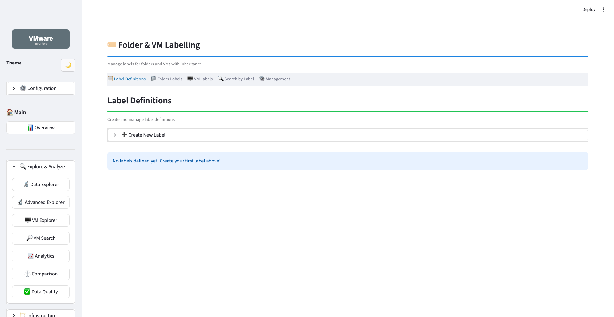
Key Features: - Label Management: - Create key-value labels - Color coding - Descriptions - Categories - Folder Labelling: - Hierarchical assignment - Inheritance options - Batch operations - VM Labelling: - Individual VM labels - Inherited labels display - Batch labelling by criteria - Search by Label: Find labelled items
Best For: - Migration wave organization - Cost center tracking - Application categorization - Compliance tagging
Label Examples:
migration-wave: 1, 2, 3
cost-center: IT-Ops, Development, QA
environment: Production, Development, Test
criticality: Critical, Standard, Low
compliance: PCI, HIPAA, SOX
Batch Labelling: 1. By OS Family: Windows, Linux, Unix 2. By Resource Size: Small, Medium, Large, XLarge 3. By Network: Simple, Standard, Complex 4. By Storage: Simple, Standard, Complex
Workflow: 1. Create labels 2. Assign to folders (with inheritance) 3. Or batch-assign to VMs by criteria 4. Search/filter by labels 5. Export labelled VM lists
URL: http://localhost:8501/?page=Folder_Labelling
Migration¶
🎯 Migration Targets¶
Purpose: Define and manage migration targets
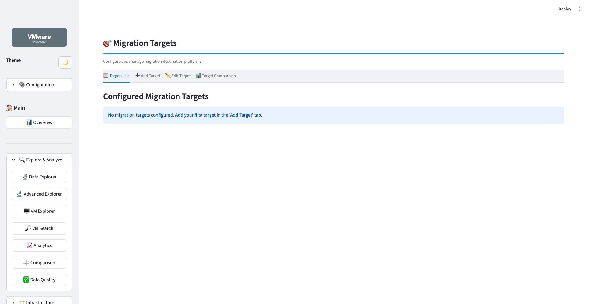
Key Features: - Target Definition: - Name and description - Target infrastructure - Capacity constraints - Compatibility rules - Target Management: - Create multiple targets - Edit existing targets - Delete targets - Clone configurations - Capacity Planning: - CPU capacity - Memory capacity - Storage capacity - Network requirements
Best For: - Multi-cloud migration planning - Datacenter consolidation - Platform upgrades - Disaster recovery planning
Target Types: - Cloud Providers: AWS, Azure, GCP - On-Premises: New vSphere clusters - Hybrid: Combined cloud + on-prem - Edge: Remote sites
Configuration Fields: - Target name and description - vCPU capacity (total available) - Memory capacity (GB) - Storage capacity (TB) - Network bandwidth - Compatibility notes - Cost estimates
URL: http://localhost:8501/?page=Migration_Targets
⚙️ Strategy Configuration¶
Purpose: Configure migration strategies
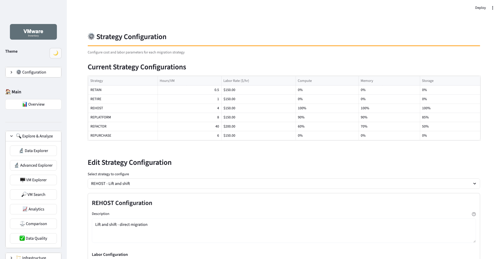
Key Features: - Strategy Types: - Lift & Shift (rehost) - Replatform - Refactor - Retire - Retain - Rules Configuration: - VM selection criteria - Priority ordering - Resource requirements - Dependencies - Wave Definition: - Wave size - Wave duration - Wave dependencies - Rollback plans
Best For: - Complex migration planning - Phased migrations - Risk mitigation - Dependency management
Strategy Options:
Lift & Shift: - Minimal changes - Quick migration - Lower risk - Like-for-like
Replatform: - Minor optimizations - Platform modernization - Moderate changes - Improved efficiency
Refactor: - Significant changes - Cloud-native features - Application updates - Maximum optimization
Criteria Examples: - OS compatibility - Application type - Resource size - Network complexity - Storage requirements - Downtime tolerance
URL: http://localhost:8501/?page=Strategy_Configuration
📋 Migration Planning¶
Purpose: Plan and schedule migrations
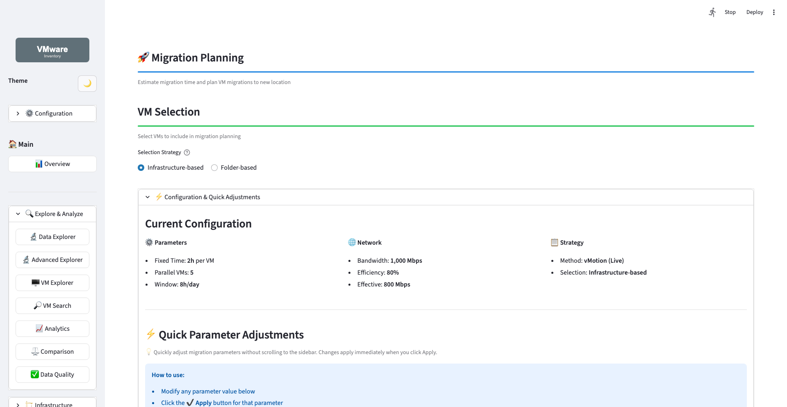
Key Features: - Wave Planning: - Create migration waves - Assign VMs to waves - Set timelines - Define dependencies - Resource Validation: - Check target capacity - Verify compatibility - Identify conflicts - Timeline View: - Gantt chart visualization - Critical path analysis - Milestone tracking - Risk Assessment: - Dependency risks - Capacity risks - Timeline risks
Best For: - Detailed migration scheduling - Resource allocation - Timeline management - Stakeholder communication
Planning Steps: 1. Define Waves: Group VMs logically 2. Assign VMs: Allocate VMs to waves 3. Set Dates: Schedule migration windows 4. Validate: Check capacity and compatibility 5. Review: Assess risks 6. Approve: Get stakeholder sign-off 7. Execute: Follow the plan
Wave Attributes: - Wave number/name - Start date - End date - VM count - Total resources (CPU, memory, storage) - Dependencies - Assigned team - Status
URL: http://localhost:8501/?page=Migration_Planning
🔄 Migration Scenarios¶
Purpose: Create and analyze migration scenarios
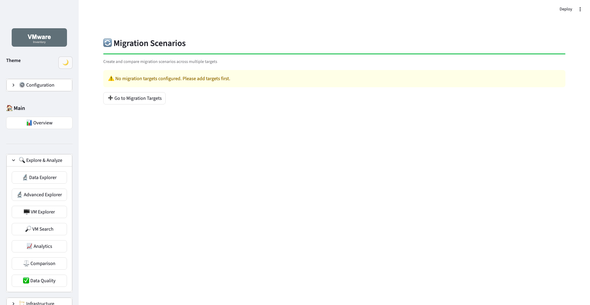
Key Features: - Scenario Creation: - Define multiple "what-if" scenarios - Compare different approaches - Test various strategies - Analysis Tools: - Cost comparison - Risk assessment - Timeline comparison - Resource utilization - Scenario Comparison: - Side-by-side metrics - Visual comparisons - ROI calculations - Export Scenarios: Save for presentations
Best For: - Strategic planning - Budget justification - Risk analysis - Decision support
Scenario Types:
Conservative: - Longer timeline - Smaller waves - More testing - Lower risk - Higher cost
Aggressive: - Shorter timeline - Larger waves - Minimal testing - Higher risk - Lower cost
Hybrid: - Balanced approach - Moderate timeline - Mixed wave sizes - Managed risk - Optimized cost
Comparison Metrics: - Total duration - Total cost - Risk score - Resource efficiency - Downtime impact - Complexity score
URL: http://localhost:8501/?page=Migration_Scenarios
Management¶
📥 Data Import¶
Purpose: Import data from Excel files
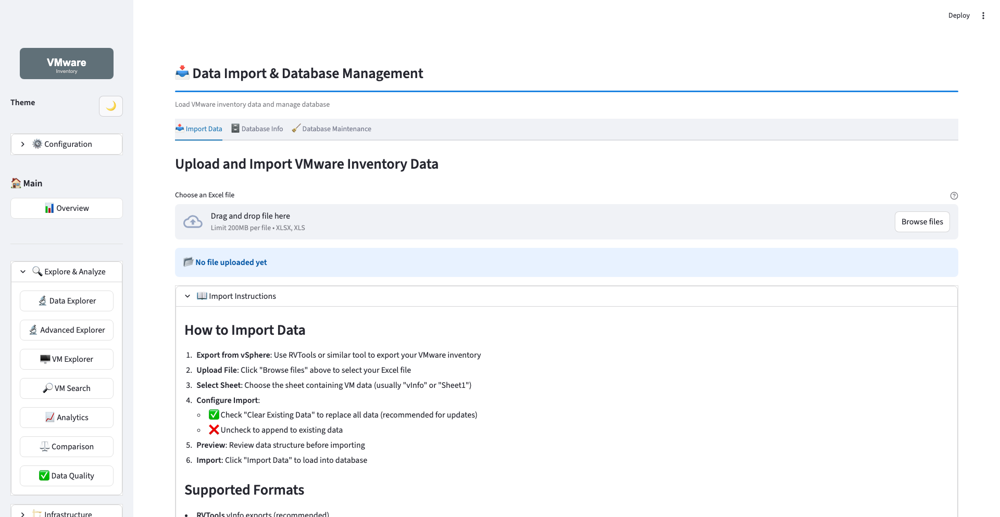
Key Features: - File Upload: - Drag & drop interface - Browse for files - Support for .xlsx, .xls - Sheet Selection: Choose from workbook sheets - Import Modes: - Replace (clear existing data) - Append (add to existing) - Data Preview: Review before import - Progress Tracking: Real-time status - Validation: Automatic checks - Error Reporting: Detailed feedback
Best For: - Initial data loading - Regular data updates - Bulk imports - Data migration
Supported Formats: - RVTools vInfo exports (recommended) - PowerCLI exports - Custom VMware exports
Required Columns: - VM (name) - Powerstate - CPUs - Memory - Datacenter - Cluster
Import Process: 1. Click "Browse files" or drag & drop 2. Select Excel file 3. Choose sheet (usually "vInfo") 4. Select import mode 5. Preview data structure 6. Click "Import" 7. Monitor progress 8. Verify import success
Tips: - Backup database before import - Use "Replace" for clean slate - Verify column mapping - Check row count after import
URL: http://localhost:8501/?page=Data_Import
💾 Database Backup¶
Purpose: Backup and restore database
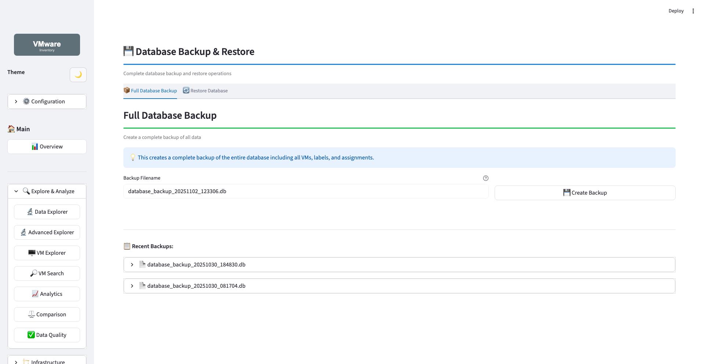
Key Features: - Backup Operations: - Create full database backup - Scheduled backups - Incremental backups - Compressed backups - Restore Operations: - Restore from backup - Point-in-time restore - Selective restore - Validation before restore - Backup Management: - List available backups - Delete old backups - Verify backup integrity - Backup metadata - Database Info: - Connection status - Database size - Table statistics - Last backup time
Best For: - Data protection - Before major changes - Disaster recovery - Version control
Backup Strategies:
Before Import:
Regular Schedule:
Before Major Changes:
Restore Process: 1. Select backup file 2. Preview backup info 3. Confirm restore 4. Wait for completion 5. Verify data 6. Test functionality
Backup Locations: - Local filesystem - Network share (recommended) - Cloud storage (S3, Azure Blob) - External drive
URL: http://localhost:8501/?page=Database_Backup
Export & Help¶
📄 PDF Export¶
Purpose: Generate professional PDF reports
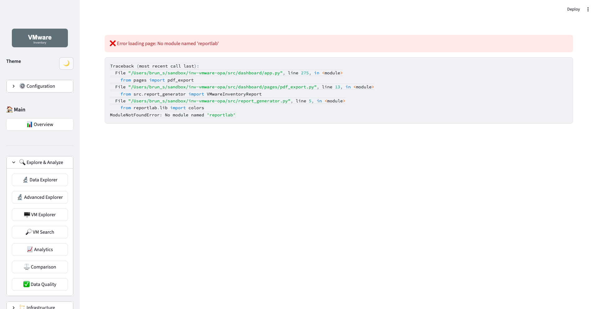
Key Features: - Report Types: - Standard: 6-8 key charts - Extended: 20+ comprehensive charts - Summary: Tables only, no charts - Configuration: - Page size (Letter, A4) - Chart quality (100-300 DPI) - Color scheme - Logo inclusion - Content Sections: - Executive summary - Infrastructure overview - Resource analysis - Storage analysis - Folder analysis - Data quality report - Export Options: - Download PDF - Email report - Schedule generation
Best For: - Executive presentations - Stakeholder reports - Compliance documentation - Offline analysis
Report Contents:
Standard Report (~10 pages): - Executive summary - Key metrics - Top 6-8 charts - Critical tables
Extended Report (~30 pages): - Everything in Standard - Detailed analytics (20+ charts) - Infrastructure comparison - Extended folder analytics - Comprehensive tables
Summary Report (~5 pages): - Tables only - No charts - Quick reference - Data export
Generation Steps: 1. Select report type 2. Configure options 3. Click "Generate PDF" 4. Wait for generation (30-60s) 5. Download PDF 6. Review and distribute
Tips: - Use Standard for executives - Use Extended for technical teams - Use Summary for data export - Higher DPI = larger files - Letter size for US, A4 for international
URL: http://localhost:8501/?page=PDF_Export
📚 Help¶
Purpose: Built-in help and documentation
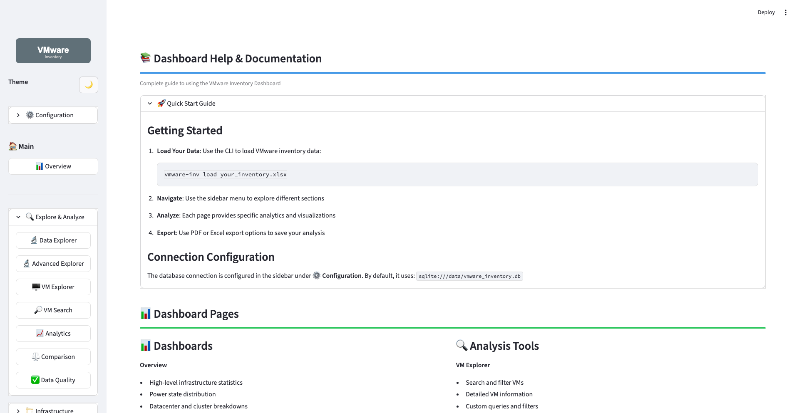
Key Features: - Quick Start Guide: Get started quickly - Page Documentation: Help for each page - Search Functionality: Find specific topics - Video Tutorials: Step-by-step guides - FAQ: Common questions answered - Troubleshooting: Problem resolution - API Reference: For developers - Keyboard Shortcuts: Productivity tips - What's New: Latest features - Contact Support: Get help
Best For: - Learning the dashboard - Troubleshooting issues - Finding features - Understanding data
Help Sections:
Getting Started: - Installation - First import - Navigation basics - Configuration
Features: - Page-by-page guides - Feature tutorials - Best practices - Tips & tricks
Troubleshooting: - Common issues - Error messages - Performance tips - Data quality
Reference: - CLI commands - API documentation - Configuration options - Database schema
Search Tips: - Use keywords - Try different terms - Check related topics - Use table of contents
URL: http://localhost:8501/?page=Help
Tips & Best Practices¶
Navigation¶
Sidebar Menu: - Main categories are always visible - Sub-categories can be collapsed - Current page is highlighted - Click to navigate instantly
Direct URLs: - Bookmark frequently used pages - Share specific pages with team - Use query parameters for automation
Data Exploration¶
Progressive Discovery: 1. Overview - Start here for big picture 2. Resources - Understand resource allocation 3. Infrastructure - See topology and hierarchy 4. VM Explorer - Drill into specific VMs 5. Analytics - Deep dive into patterns
Visualization¶
Chart Interactions: - Hover: Show detailed tooltips - Click: Select/filter data - Zoom: Click and drag area - Pan: Hold Shift + drag - Reset: Double-click chart - Export: Camera icon
Chart Types: - Bar charts: Comparisons - Line charts: Trends - Pie charts: Proportions - Scatter plots: Correlations - Heatmaps: Patterns - Treemaps: Hierarchies
Performance¶
For Large Datasets: - Use filters to reduce data - Apply datacenter/cluster filters - Increase pagination size - Use PostgreSQL instead of SQLite - Add database indexes
Refresh Data: 1. Import new data 2. Refresh browser (F5) 3. Data automatically updates
Reporting¶
Export Options: - PDF Reports: Comprehensive formatted reports - CSV Exports: Raw data for analysis - Chart Images: Individual visualizations - Screenshots: Full page captures
Best Practices: - Generate PDF for presentations - Export CSV for Excel analysis - Save chart images for documents - Take screenshots for training
Keyboard Shortcuts¶
| Shortcut | Action |
|---|---|
Tab |
Navigate between elements |
Enter |
Activate button/link |
Space |
Toggle checkbox |
Esc |
Close dialog/modal |
Ctrl/Cmd + F |
Search page |
Ctrl/Cmd + R |
Refresh page |
Ctrl/Cmd + P |
Print/PDF |
Ctrl/Cmd + S |
Save (if applicable) |
Troubleshooting¶
Common Issues¶
No Data Displayed:
- Check database connection in sidebar
- Verify data import was successful
- Run: vmware-inv stats to verify data
Charts Not Loading: - Refresh browser (F5) - Clear browser cache - Check browser console for errors
Performance Slow: - Apply filters to reduce data - Use PostgreSQL for large datasets - Close unused browser tabs - Increase browser memory
Import Fails: - Check Excel file format - Verify column names match - Check for empty required fields - Review error messages
Getting Help¶
- Check Help page in dashboard
- Review Dashboard Guide
- Check FAQ
- Open GitHub issue
- Contact support
Next Steps¶
- Dashboard Guide - Detailed feature documentation
- CLI Commands - Command-line reference
- PDF Export Guide - Report generation
- API Reference - Programmatic access
Summary¶
The VMware Inventory Dashboard provides 20 specialized pages for comprehensive infrastructure analysis:
- 7 Exploration pages for data discovery and analysis
- 4 Infrastructure pages for topology and resource management
- 4 Migration pages for planning and execution
- 2 Management pages for data and backup operations
- 2 Export & Help pages for reporting and assistance
Each page is designed for specific tasks and workflows, with visual interfaces and interactive charts to make VMware inventory management efficient and insightful.